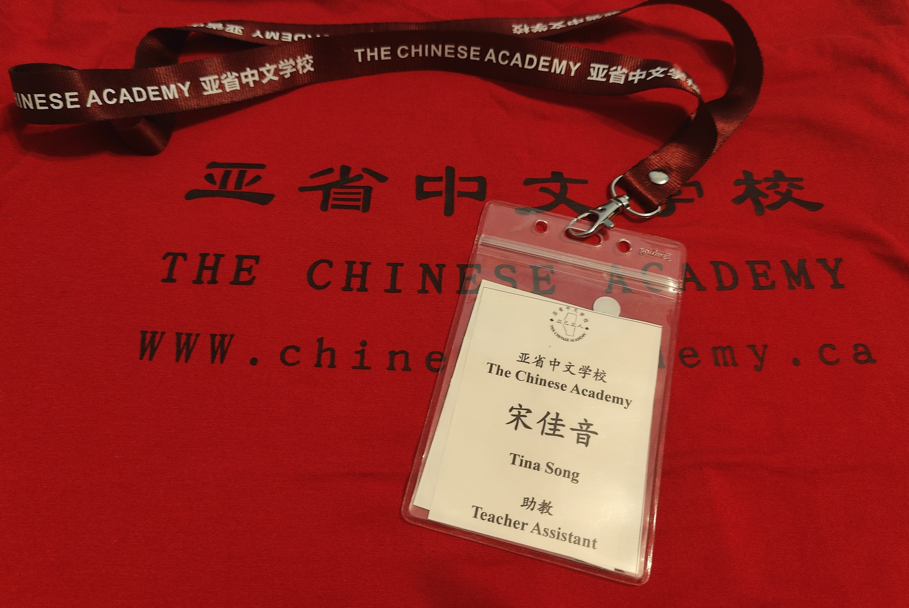
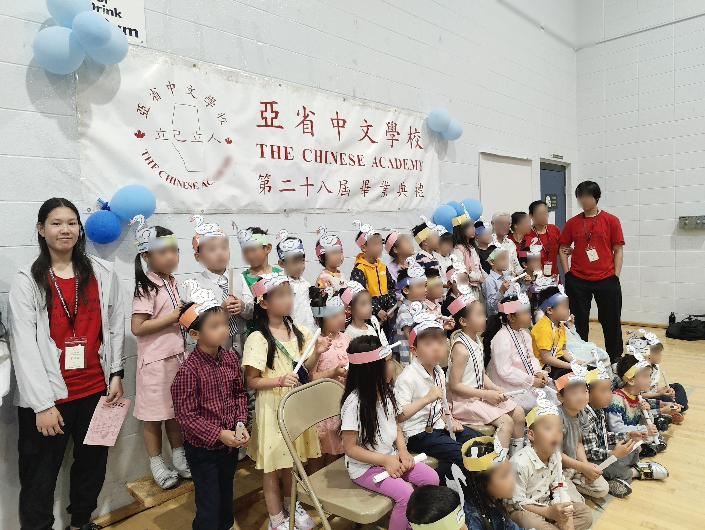
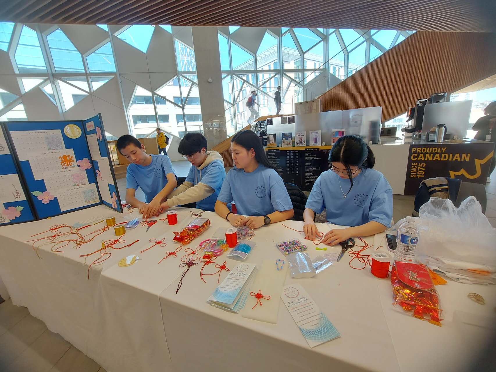

The Chinese Academy Teaching Assistant
Teaching Assistant experience supporting Chinese language education across different age groups (Pre-K to Grade 10) at The Chinese Academy in Calgary, AB.
Overview
From October of 2022 until my graduation from high school in June 2025, I worked first as a volunteer with students in Grades 9-10 learning Chinese as a second language, then I assumed a position as teaching assistant for two Pre-Kindergarten/Kindergarten Chinese classes. The Chinese Academy is a Saturday Language School and I worked for 3 hours every Saturday during my term with them.

Upper-Grade Second Language Classroom Support
- Assisted students learning Mandarin as a second language
- Helped with: Pronunciation practice, Vocabulary understanding and Speaking confidence
- Provided support during class activities and group work
- Clarified instructions and helped struggling students keep up
Kindergarten Teaching Assistant
- Supported lead teachers in a Kindergarten classroom setting, assisting with
daily routines and classroom structure.
- Guided Students through group activities and participation.
- Helped manage classroom behavior in a calm and positive way.

United Nations Chinese Language Day @ Central Library (Calgary, AB)

This photo was taken at the Central Library, where I got selected to volunteer for UN Chinese Language Day in collaboration with The Chinese Academy to showcase elements of Chinese culture. Here, I am teaching kids how to tie Traditional Chinese knots.
Skills / Key Takeaways
- Strong experience working with different age groups and learning needs.
- Developed communication, leadership, and empathy skills.
- Learned to adapt teaching style based on student age and ability.
- Built confidence in mentorship and supporting others in learning environments.